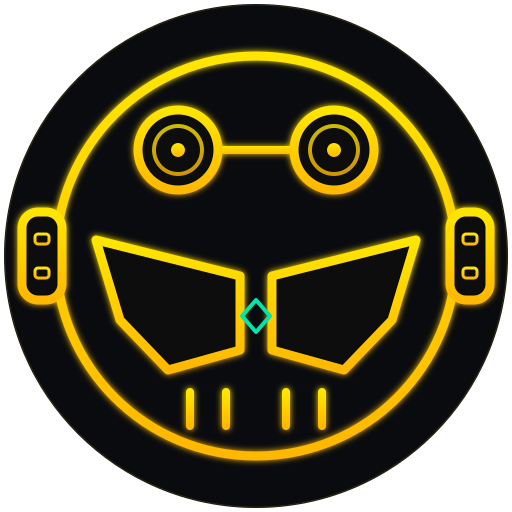

Zonked
Acoustic recovery for AI-assisted coding
Kiroween 2026: Resurrection and Best Kiro Crew App
Rust no_std WASM synth, 232 templates, three Kiro Crew agents

The problem: AI coding burnout
- AI assistants turn hours of work into minutes of attention
- Sessions stay in high-velocity mode with no natural pauses
- The signs are already in git: commit rate, session length, failed builds
- Break timers ignore intensity and ignore sound
- Zonked measures intensity, then changes what you hear
- Score 0 to 100: velocity 30, duration 40, failures 20, sprawl 10
Resurrection: 1998 to 2026
- 1998 SBaGen: text scripts for binaural beats
- 2018 final-year web app and mascot, inspired by an Android app (credited, legacy/)
- 2026: Rust no_std DSP, 38 KB WASM
- Offline PWA, sbg language kept, hard limits
- Library: 232 templates plus a recommender
- Five layers made by the engine; optional licensed nature loops
- License: MIT. Not a medical device
Kiro Crew architecture
burnout-sentinelcron, 5 min
acoustic-sequenceron signals change
dsp-verifieron DSP change
.zonked-signals.json
.zonked-state.json
.zonked-verify.json
crew-bridge127.0.0.1 SSE
→Browsermain thread
→WASM DSPAudioWorklet
→Speakersheadphones
- Agents talk only through files, no network
- Bridge clamps every message; library works offline
Demo highlights
Beat 1: Crew runningThree agents write state files
Beat 2: Library and soundRecommender, layers, 3D mascot
Beat 3: Burnout ResetScore climbs, 10 Hz glides to 6 Hz
Beat 4: Airplane modeOffline reload, sleep timer fades
Recording: media/zonked-demo.webm
Security posture
- Static files only: no server code to attack
- CSP script-src self plus wasm-unsafe-eval, COOP and COEP isolation
- Bridge binds 127.0.0.1, checks Host and Origin, read-only
- State files and sbg scripts are untrusted: 64 KB, 256 KB, 500 events
- Hearing safety: gain 0.85, layer bus 0.6, limiter 0.95
- No eval, analytics, remote audio or third-party requests; audited
How we used Kiro
- Specs: EARS requirements, design, tasks, shared contracts
- Steering: an always-on standards file binds every change
- Hooks: edit dsp-core and cargo test runs automatically
- Crew: sentinel, sequencer and verifier run beside the editor
- Subagents: parallel specialists built layers, catalog, UI, docs
- AGENTS.md maps the repo so every agent shares one contract
Roadmap and ask
- Next: richer signals for the sentinel, such as review queue and CI
- Next: your own templates, tuned from session logs
- Next: a Safari path for the bridge, since https blocks loopback
- Next: share and import sbg scripts as plain files
- Ask: your vote for Resurrection and Best Kiro Crew App
- Try it: npm --prefix web run dev, then press Play